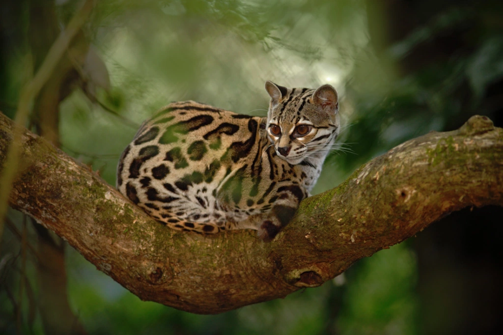
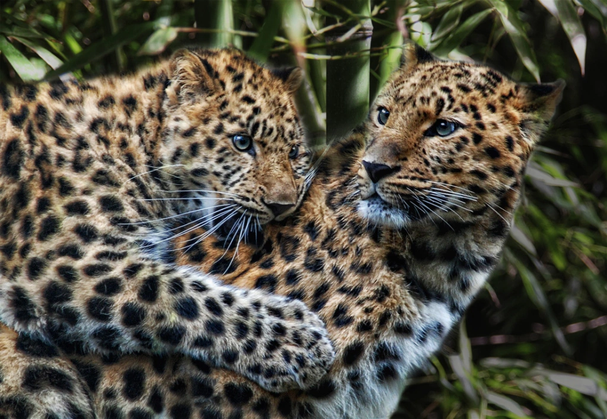

 The Margay Cat lives throughout South America and Mexico and is related to Ocelots, which offer a striking resemblance; they’re sometimes known as “tree ocelots” because of their excellent climbing abilities. These cats spend most of their time in trees, instead of on the ground, and can jump up to 12 feet into the air. They’re also primarily nocturnal animals.
 Another name for the Amur Leopard is the “Far Eastern Leopard,” likely attributed to the fact that they mainly inhabit areas of China and Russia. They’re distinguished by their thicker coat and spots, with cream-colored coats. They’re typically smaller in size when compared to other cats of their subspecies.
These foxes are typically found in Northern Africa and Saharan locations. Their large ears, which are likely the first thing most people notice, help them stay cool. They travel in packs, unlike most other foxes, and are also Algeria’s national animal. They’re also known as the smallest species of dog-like animals (canids) in the world, and because their ears are so large, they have an advantage when hunting for food, as they can hear their prey even if it’s underground.